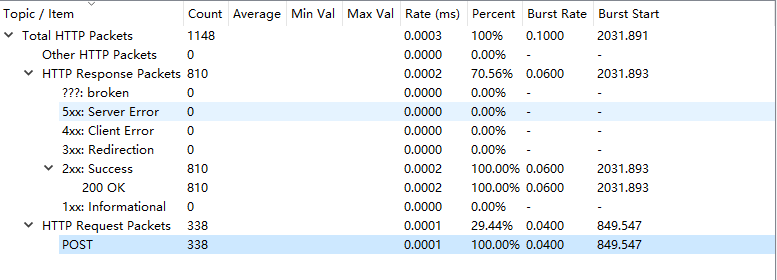
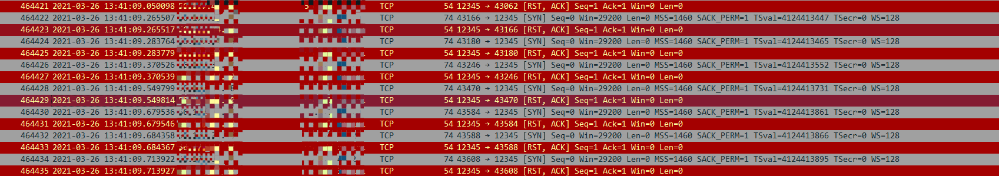
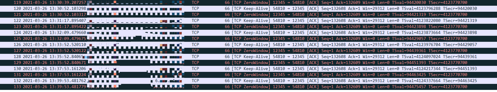
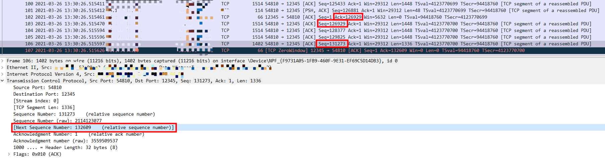

背景介绍
问题出现在某次与第三方HTTP数据对接上，发现Server端在运行大约半个小时后出现宕机现象。
Server端使用boost的asio库，性能应该有保障的。
首先，查看日志，排查对应代码片段，未发现有出现”死锁“的逻辑，只能从wireshark抓包分析了。
现场同事把抓包发回一看，好家伙，一堆的”TCP ZeroWindow”和”RST“！
问题排查
1、统计一下http请求情况，

才三百多次http请求，远远没达到正常水平，排除Server端处理瓶颈问题。
2、输入筛选条件tcp.flags.syn，看看tcp三次握手情况。

Client新连接都直接被Server端拒绝了，Server端的连接数已经达到了极限。
而Server端在处理完http请求之后都会断开当前连接，并非长连接模式。并且，根据Server端的http处理耗时来看，还算正常。
问题估计在已建立但是未正常关闭的连接上，粗略看下，基本都会出现”TCP ZeroWindow“标记。
3、随机追踪一条出现”TCP ZeroWindow“的tcp连接，

统计了下，出现这情况的连接大概有两百条，那就有可能出现同时并发的连接数大于CPU数量*2+1的情况。
而且，100个tcp包就出现滑动窗口占满的情况是不可能的，问题肯定出现在这里了。
经过排查，终于发现问题所在：

如上图，Server端最后回复给Client端包中，Win的值为5632，表示Server端还能接收5632个包。
并且Ack值为126929，希望Client下一个包的Seq序号值从126929开始。果不其然，Client端紧接着的包中Seq序号值为126929。
看Server端回复“TCP ZeroWindow”包的前一个由Client端发出的包LAST，它的Seq值为131273。
不难看出，131273 - 126929 = 4344 < 5632，这时还可以正常接收。
但是展开那个包LAST中的Next Seq值是132609，132609 - 126929 = 5680 > 5632，已经超出Win大小，所以，Server端接收到包LAST之后就返回“TCP ZeroWindow”包。
解决办法
1、Client端更改Seq的生成规则，使得Seq自增步长减少。
抓包中可以看出，Client端Seq的自增步长是1448。
2、Server端将滑动窗口变大。
由于Client端会发送PSH包通知Srever端清空缓冲，那么Server端可以将滑动窗口变大，避免出现“TCP ZeroWindow”情况。
3、优化Srever端“接收请求->回复请求”的耗时，避免同时出现异常连接并发数大于CPU数量*2+1的情况。
这种方法依旧是没办法解决问题所在的，只是尽量避免宕机情况出现。
4、Server端添加tcp连接的timeout处理。
Server端主动关闭超过timeout时间没有接收到http请求的连接。